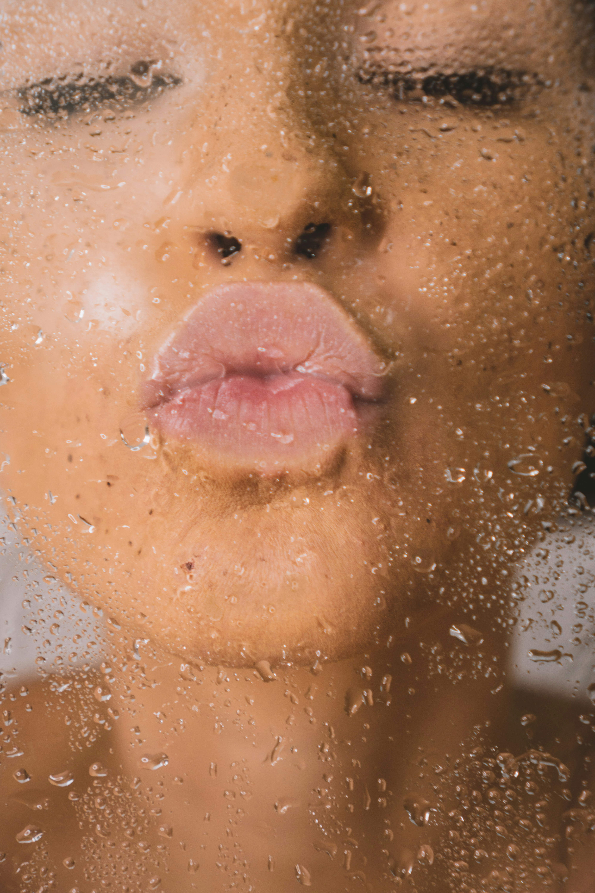

Our top 10 beauty tips and tricks!
We want our customers to feel beautiful inside and out, these are our top 10 tips and tricks to make you feel good and look good!
We want our customers to feel beautiful inside and out, these are our top 10 tips and tricks to make you feel good and look good!
It is so important to remove makeup before bed to avoid acne and irritation. Makeup can trap dirt, oil and pollutants from the environment on your skin. The accumulation will clog pores, removing your makeup allows your skin to breathe and recover.
Harmful rays from the sun can cause wrinkles, pigmentation, dark spots and as well as skin cancer. Sunscreen not only protects your skin and prevent breakouts; it also helps make your skin glow and look lively.
This saying is catchy and true. Making sure you eat nutrient rich foods can help you feel good and look good. Your skin will thank you for eating foods with high antioxidants, omega-3 fatty acids and probiotic-rich choices.

To achieve a dewy look, moisturizer mixed with foundation can create a sheer and more comfortable wear.
Toothpaste residue can irritate the skin and cause acne, dryness or redness around your mouth and skin. Best to brush your teeth and then cleanse your skin right after, every morning and night!

Just like how you curl your hair, you need heat. To curl your lashes, use heat. A blow dryer or lighter will do the trick! However, make sure the curler is hot enough to still touch before using around your eyes for the best result!

First curl your lashes and hold for 30 seconds (With a little heat!), next use a waterproof mascara as the first layer, after a few minutes, apply a layer of traditional mascara, after a few minutes curl for 10 seconds (NO HEAT). Thank us later.

We know that putting perfume on your pulse areas makes it last longer, such as your neck or wrist. Spray a little on your hairbrush and brush through your hair. An unforgettable smell for anyone you meet.

If you haven’t gotten your hands on a pink powder… You are missing out! Pink powder should only be used in the under-eye area (Not all around your face! Use a translucent powder for that!). Pink powder helps brighten complexion and can be a serious gamechanger to your makeup routine.
Its common sense, however we all know damn well we don’t do it enough! Use a cleanser or soap with no fragrance and wash your brushes with water. You can get a brush cleaner mat to get into all those spots! However, if you don’t have one of these, use a towel to scrub your brushes on! Allow a good amount of time between your brushes drying and application.